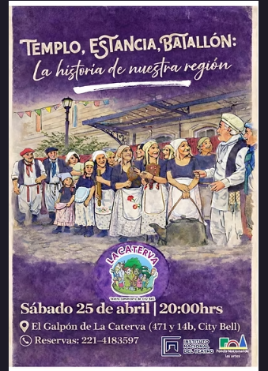
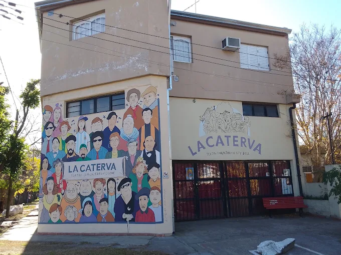
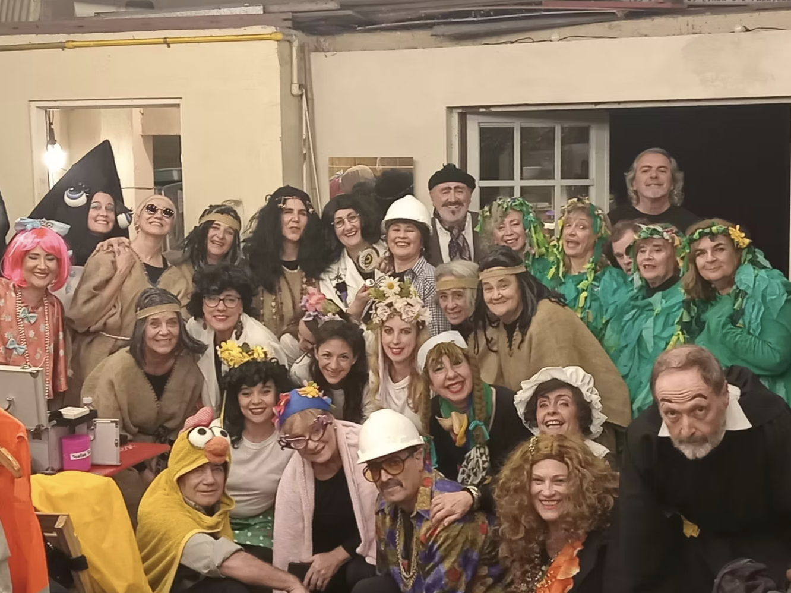
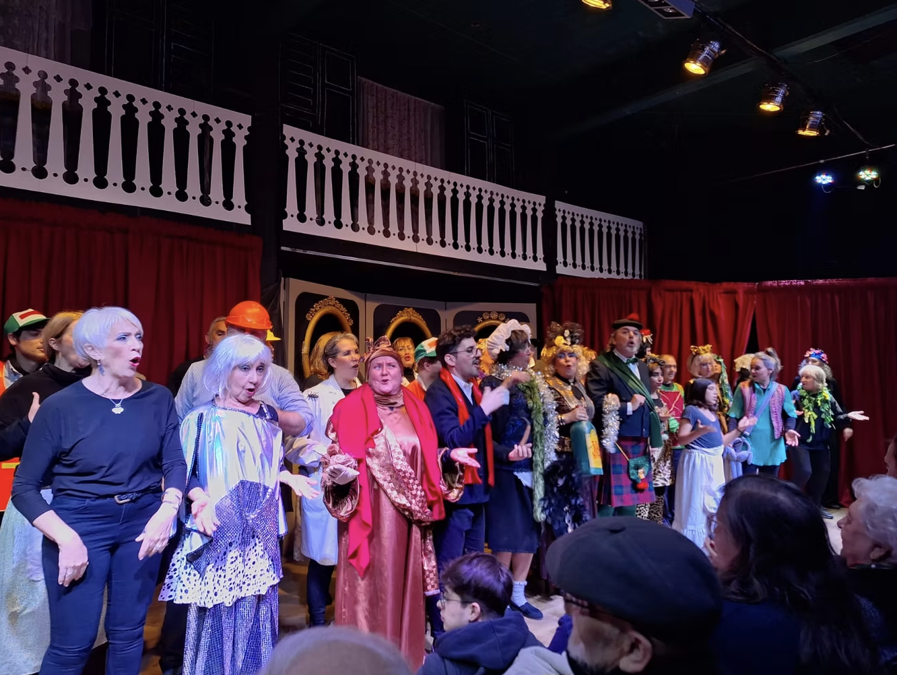
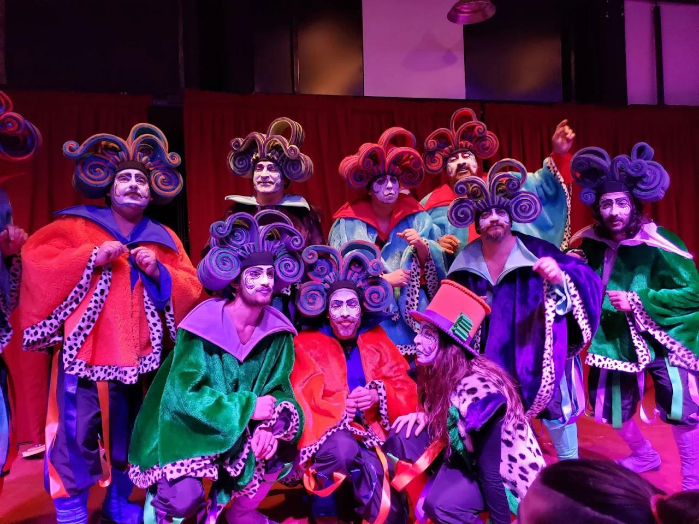
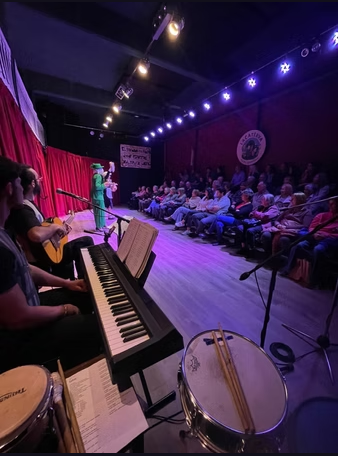
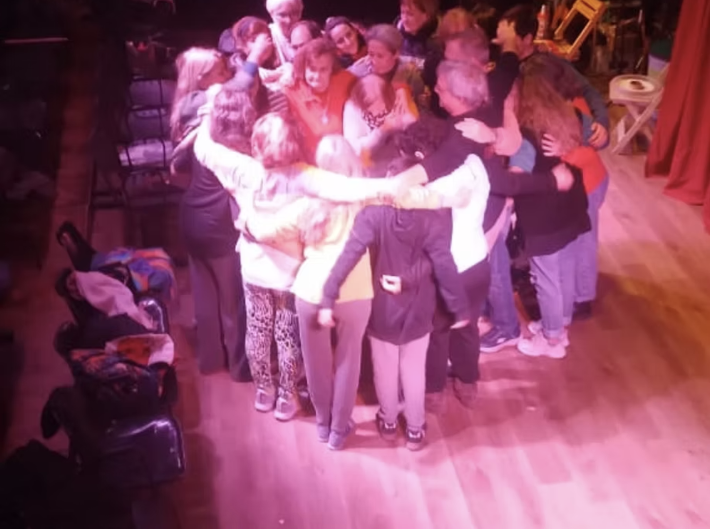

PróximaCity Bell · desde 2006
Teatro de la
comunidad
para la comunidad
La Caterva es mucho más que teatro: es vecindad, comunidad y encuentro sobre el escenario.

20
años en escena
70+
vecinos actuantes
100+
funciones presentadas
1
galpón propio

Quiénes somos
Arte como motor de conciencia y transformación social
La Caterva es mucho más que teatro: es vecindad, comunidad y encuentro sobre el escenario. Nace en 2006 como proyecto de vecinas y vecinos para crear teatro en comunidad en City Bell, con la certeza de que es posible habitar un presente diferente.
Como colectivo, creemos en el arte como motor de conciencia y transformación social: toda persona es esencialmente creativa y encuentra en el teatro una voz para expresar su verdad. Ponderamos la recuperación de la identidad, la valorización de la cultura local, la integración comunitaria, las políticas de memoria y valores democráticos, y la concientización sobre las violencias de género y de cualquier índole.
Todas nuestras actividades —teatro comunitario, teatro comunitario infantil y talleres de conciencia vocal— son gratuitas y abiertas a la comunidad. La Caterva fue declarada de Interés Cultural por la Cámara de Diputados de la Provincia de Buenos Aires y por la Municipalidad de La Plata.
Las vecinas y los vecinos
Un colectivo de casi 70 personas
El colectivo se conforma por un grupo de aproximadamente 70 personas, que participan de las obras realizando diversas tareas ya sea en las áreas teatrales, como técnicos de sonido, en la música, iluminación, vestuario, maquillaje o plástica, entre otras.
Actuación
Música
Sonido
Iluminación
Vestuario
Maquillaje
Plástica

Agenda
Próximas funciones
Últimas funciones
- 18 Jul 2026 Despiertas: ¿quiénes fueron ellas?
- 4 Jul 2026 Templo, Estancia, Batallón
- 30 May 2026 Templo, Estancia, Batallón
Memorias
Obras y momentos





Participá
No hace falta saber actuar
La Caterva crece sumando vecinos y vecinas de todas las edades. Cada año convocamos para participar en actuación, escenografía, música, vestuario o lo que tengas ganas de aportar.
Quiero sumarmeEncontranos
Dónde estamos
El Galpón de La Caterva
471 y 14B, City Bell, La Plata
Horarios
- EnsayosLunes y miércoles 19:30
- FuncionesSábados 20 h (ver cartelera)